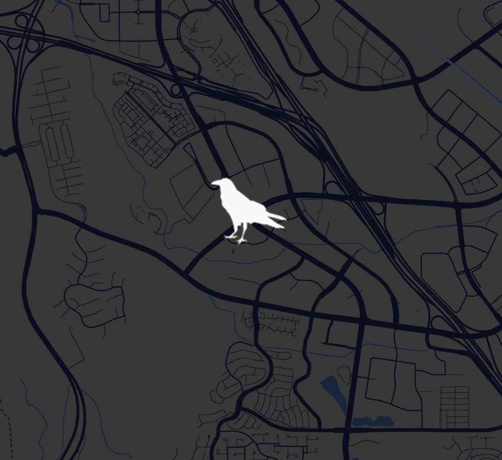
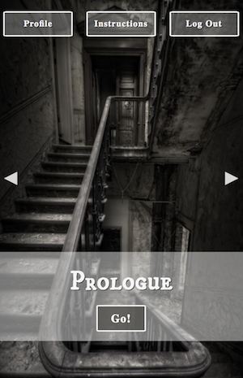
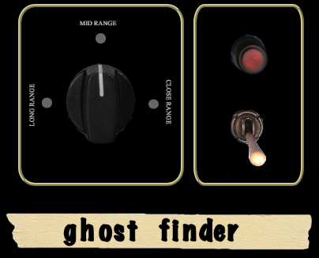
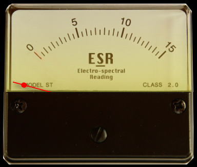

Instructions
Open the map to find the location of the marker to unlock the next event.
Only ghost hunt if the weather permits. Low light and poor weather conditions can distort the cards, which are necessary to unlock spirits. Always be aware of surrounding dangers when interacting with the game.
To start, grab your cards, put on headphones, open game webpage, login, and confirm to begin or continue a story.
Not sure where to begin? Pick a story from the library and 'go!'.
Ghost Finder
To locate your spirit, flip the switch on the ghost finder.
The knob has three ranges; long, mid and close. You can turn ('click') the knob to help gauge the meter. Continue to adjust the knob based on proximity to the spirit.
Meter
Once you're in the experience you'll see the meter. The meter is displayed in portrait mode only.
Use the meter to guide you towards your next location. As you approach the spirit, you will begin to hear music. When your narrator begins to speak, stop and listen.